🎥 Video¶
Human friendly interface to the Video for Linux 2 (V4L2) subsystem.

Without further ado:
Device creation¶
Create a device object from an ID:
from linuxpy.video.device import Device
camera = Device.from_id(10)
from a filename:
from linuxpy.video.device import Device
camera = Device("/dev/video10")
or from an existing file object:
from linuxpy.video.device import Device
with open("/dev/video10", "rb+", buffering=0) as fd:
camera = Device(fd)
Before using video Device object you need to open it (except in the
example directly above when creating a device from a file object).
You can either use the device object as a context manager (prefered):
with Device.from_id(10) as camera:
...
The Device object is a reusable, reentrant but not thread safe context manager. This means that Device object can not only be used in multiple with statements, but may also be used inside a with statement that is already using the same context manager.
So the following examples will work just fine:
with Device.from_id(10) as camera:
...
with camera:
...
with camera:
...
Alternatively, you can manage calls Device.open()/Device.close() manually:
camera = Device.from_id(10)
camera.open()
try:
...
finally:
camera.close()
Capture¶
Simple capture without any configuration is possible using the Device object as an infinite iterator:
from linuxpy.video.device import Device, VideoCapture
with Device.from_id(0) as camera:
for frame in camera:
...
The resulting Frame objects can safely and efficiently be converted to bytes.
To be able to configure the acquisition, you will need to use the
VideoCapture helper. Here is an example with image size and format configuration:
from linuxpy.video.device import Device, VideoCapture
with Device.from_id(0) as camera:
capture = VideoCapture(camera)
capture.set_format(640, 480, "MJPG")
with capture:
for frame in capture:
...
Note that VideoCapture configuration must be done before the capture is started
(ie, the with capture: statement.)
By default, VideoCapture will use memory map if the device has STREAMING capability and falls back to standard read if not. It is also possible to force a specific reader:
from linuxpy.video.device import Capability, Device, VideoCapture
with Device.from_id(0) as cam:
with VideoCapture(cam, source=Capability.READWRITE):
for frame in capture:
...
Information¶
Getting information about the device:
>>> from linuxpy.video.device import Device, BufferType
>>> cam = Device.from_id(0)
>>> cam.open()
>>> cam.info.card
'Integrated_Webcam_HD: Integrate'
>>> cam.info.capabilities
<Capability.STREAMING|EXT_PIX_FORMAT|VIDEO_CAPTURE: 69206017>
>>> cam.info.formats
[ImageFormat(type=<BufferType.VIDEO_CAPTURE: 1>, description=b'Motion-JPEG',
flags=<ImageFormatFlag.COMPRESSED: 1>, pixelformat=<PixelFormat.MJPEG: 1196444237>),
ImageFormat(type=<BufferType.VIDEO_CAPTURE: 1>, description=b'YUYV 4:2:2',
flags=<ImageFormatFlag.0: 0>, pixelformat=<PixelFormat.YUYV: 1448695129>)]
>>> cam.get_format(BufferType.VIDEO_CAPTURE)
Format(width=640, height=480, pixelformat=<PixelFormat.MJPEG: 1196444237>}
>>> for ctrl in cam.controls.values(): print(ctrl)
<IntegerControl brightness min=0 max=255 step=1 default=128 value=128>
<IntegerControl contrast min=0 max=255 step=1 default=32 value=32>
<IntegerControl saturation min=0 max=100 step=1 default=64 value=64>
<IntegerControl hue min=-180 max=180 step=1 default=0 value=0>
<BooleanControl white_balance_automatic default=True value=True>
<IntegerControl gamma min=90 max=150 step=1 default=120 value=120>
<MenuControl power_line_frequency default=1 value=1>
<IntegerControl white_balance_temperature min=2800 max=6500 step=1 default=4000 value=4000 flags=inactive>
<IntegerControl sharpness min=0 max=7 step=1 default=2 value=2>
<IntegerControl backlight_compensation min=0 max=2 step=1 default=1 value=1>
<MenuControl auto_exposure default=3 value=3>
<IntegerControl exposure_time_absolute min=4 max=1250 step=1 default=156 value=156 flags=inactive>
<BooleanControl exposure_dynamic_framerate default=False value=False>
>>> cam.controls["saturation"]
<IntegerControl saturation min=0 max=100 step=1 default=64 value=64>
>>> cam.controls["saturation"].id
9963778
>>> cam.controls[9963778]
<IntegerControl saturation min=0 max=100 step=1 default=64 value=64>
>>> cam.controls.brightness
<IntegerControl brightness min=0 max=255 step=1 default=128 value=128>
>>> cam.controls.brightness.value = 64
>>> cam.controls.brightness
<IntegerControl brightness min=0 max=255 step=1 default=128 value=64>
(see also v4l2py-ctl example)
asyncio¶
linuxpy.video is asyncio friendly:
(check basic async and web async examples)
gevent¶
linuxpy.video is also gevent friendly:
>>> from linuxpy.io import GeventIO
>>> from linuxpy.video.device import Device
>>> with Device.from_id(0, io=GeventIO) as camera:
... for frame in camera:
... print(f"frame {len(frame)}")
frame 10224
frame 10304
frame 10224
frame 10136
...
(check basic gevent and web gevent examples)
Video output¶
It is possible to write to a video output capable device (ex: v4l2loopback). The following example shows how to grab frames from device 0 and write them to device 10:
>>> from linuxpy.video.device import Device, VideoOutput, BufferType
>>> dev_source = Device.from_id(0)
>>> dev_sink = Device.from_id(10)
>>> with dev_source, dev_target:
>>> source = VideoCapture(dev_source)
>>> sink = VideoOutput(dev_sink)
>>> source.set_format(640, 480, "MJPG")
>>> sink.set_format(640, 480, "MJPG")
>>> with source, sink:
>>> for frame in source:
>>> sink.write(frame.data)
By default, VideoOutput will use memory map if the device has STREAMING
capability and falls back to standard write if not. It is also possible to
force a specific writer with VideoOutput(cam, sink=Capability.READWRITE):
v4l2loopback¶
This is just an example on how to setup v4l2loopback.
Start from scratch:
# Remove kernel module and all devices (no client can be connected at this point)
sudo modprobe -r v4l2loopback
# Install some devices
sudo modprobe v4l2loopback video_nr=20,21 card_label="Loopback 0","Loopback 1"
References¶
See the linux/videodev2.h header file for details.